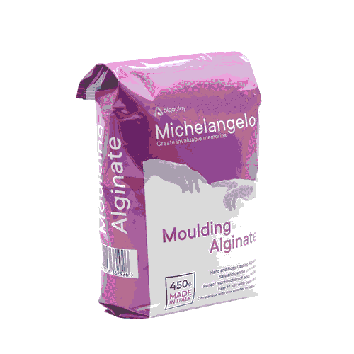

Moulage plâtre / alginate
diy / casting / notes

Notes de préparation pour un moulage de main à l'alginate de moulage, type Michelangelo Moulding Alginate — Fast Setting. Alginate chromatique à prise rapide (~2 min au total).
Acheté sur Amazon (boutique Algaplay) : 4 × 450 g — 31,90 € soit 17,72 € / kg. Note : 4,5/5 (604 avis).
Volumes & proportions — Alginate
Ratio recommandé : 3 parts eau pour 1 part poudre (en poids). Pour un sac de 450 g :
| Poudre | Eau (3:1 poids) | Volume final ≈ |
|---|---|---|
| 100 g | 300 ml | ~0,37 L |
| 450 g (1 sac) | 1,35 L | ~1,7 L |
Astuce pour mesurer le volume du récipient : placer la main dans le seau vide, verser de l'eau jusqu'à recouvrir, retirer la main, noter le niveau. C'est le volume cible. Pour 2 L, prévoir ~550 g de poudre + 1,65 L d'eau.
Phases de prise (Fast Setting)
- Mélange (violet) : ~45 secondes pour combiner eau et poudre.
- Travail (orange) : ~45 secondes pour immerger la main.
- Prise (jaune) : 20–40 secondes, le moule se fige.
Coulée — Plâtre (recommandé)
Le plâtre est le matériau idéal pour l'alginate : léger, rapide, précision maximale.
| Type | Dureté | Détail | Prise |
|---|---|---|---|
| Plâtre de Paris ✓ | faible | moyen | 20–30 min |
| Plâtre céramique (Gédéo, Raysin 200, Artestone) | bonne | très bon | 30–40 min |
| Pierre dentaire (Grade III/IV) | extrême | chirurgical | 15–20 min |
Ratio de mélange : 2 doses de plâtre pour 1 dose d'eau en poids.
Technique de coulée :
- Verser d'abord un peu de plâtre et tourner le moule pour enduire toutes les surfaces (évite les bulles en surface).
- Remplir complètement.
- Tapoter les parois du récipient pour faire remonter les bulles.
- Attendre 45–60 min avant de démouler.
- Séchage complet : 3–7 jours avant de peindre ou vernir.
Mélange — retour d'expérience :
- À la main : rapide mais produit des grumeaux.
- À la perceuse (malaxeur) : homogène mais introduit beaucoup de bulles d'air.
- Piste : commencer à la perceuse pour dissoudre les grumeaux, finir à la main pour chasser les bulles — mais le temps est court, il faut être organisé.
Résultat

Démoulage
Étape la plus délicate. Le plâtre de Paris est fragile : les doigts fins cassent facilement.
- Décoller l'alginate progressivement, sans forcer — le plâtre n'est pas encore à pleine dureté.
- Si un doigt casse : recoller à la super glue (testé, ça marche).
Nettoyage
- Ne jamais verser l'alginate liquide ou semi-pris dans l'évier — obstrue les canalisations.
- Laisser durcir les résidus dans les récipients, puis décoller en morceaux
- Élimination : poubelle ménagère ou compost (biodégradable, base d'algues).
- Alginate restant dans les détails du plâtre : brosse à dents souple + un peu d'eau.
Liens
- ciloubidouille.com — tuto moulage de main
- algaplay.com — Michelangelo Hand Casting Set
- amazon.fr — Michelangelo Alginate 4 × 450 g, 31,90 € (boutique Algaplay)
Autres matériaux possibles (non testés)
- Ciment / mortier : possible (1:2 ciment:sable fin), mais agressif pour le moule, prise 24 h, port de gants obligatoire.
- Cire / savon : résultat réputé très bon. Laisser refroidir le matériau à ~60 °C avant de couler.
- Époxy : déconseillé directement dans l'alginate (l'eau empêche la prise, chaleur exothermique, résultat trouble).
Follow up
- Essayer un plâtre céramique type Gédéo ou Raysin 200 — comparer la dureté et le rendu de surface.
- Tester un spray démoulant avant la coulée.
- Trouver la bonne technique de mélange de l'alginate
- Tester la cire (bougie) comme matériau de coulée.
- Noter le volume exact utilisé pour un moulage de main adulte.